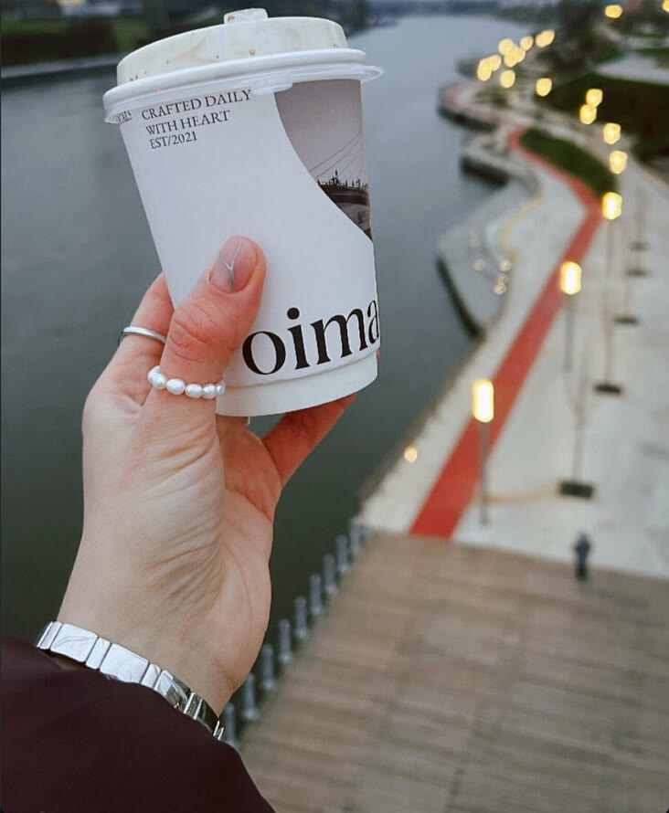

У моста
Красногорский бульвар, 26

Первая точка, в доме у набережной. Места внутри немного, поэтому кофе чаще берут с собой и идут гулять к реке.
- Ориентир
- мост через Москву-реку, набережная
- Капучино
- 200–290 ₽
- Вход
- с улицы, есть пандус
- С животными
- можно
«…взял кофе и пошел гулять вдоль Поймы. Название заведения отдельно намекает))» Maria Filimonova